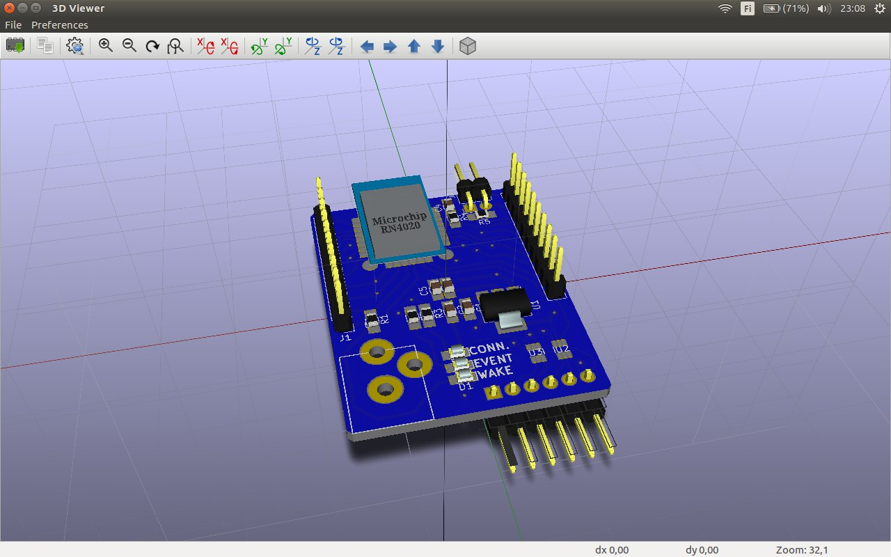
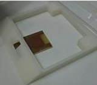

Sensor unit
The sensor unit is constructed from two parts, the energy harvesting part and the wireless sensor module. The energy harvesting unit is constructed with solar panel and a super capacitor. A simple voltage clamping circuit is also included so the voltage cannot exceed the limits of the sensor module. The Wireless sensor module is built with Vishays VCNL4010 sensor and a Bluetooth low energy module BMD-200-B-R by Rigado. The BLE module is based on very popular nRF51 chips, which are relatively easy to develope on.
Wireless sensor unit
The wireless sensor unit consists of two main components, the BLE module and the ambient light and proximity sensor. These two are connected to each other via I2C bus BLE module working as a host. also an interrupt line is included so the BLE module can be held at sleep state to save energy when there is no activity.
For our sensor we choose the Vishay VNCL4010 ambient light and proximity sensor. It comes with a really low current consumption and it’s usage is well documented. It can be set to trigger interrupts for example when certain proximity or ambient light threshold values are exceeded. The controlling can be done entirely by using I2C bus and there is already modules and arduino library by Adafruit. The package is a little challenging to solder but with good equipment it is not a problem.
Bluetooth low energy module built around Nordic semiconductor's nRF51822 BLE chip. It has 256kB of flash and 32kB of ram and a arm m0 core. It can be configured to perform any kinds of BLE actions by Directly programming the flash memory. Nordic semiconductor provides all the needed libraries and examples to build applications for it. In our sensor unit it also acts as a I2C master for the actual sensor.
Energy Harvesting
energy harvestin is made with a regular 5.5v solar panel. The wireles sensor module can only handel voltages up to 3.8V so the voltage needs to be limites somehow. since we were working on a low power application, simple zener diode to limit the voltage was too ineficient. the leacage current was too big and the voltage/current curve wasn’t steep enough so the voltage achieved varied a lot depending on the illumination conditions. The other simple solution for voltage clamping was to use NMOS and taking the gate signal with voltage divider from input voltage. If the voltage rises over a certain limit, the NMOS starts conducting and the voltage drops. since the low power solar panel can be seen as a quite high impedance source, even a small extra current drawn will be enough to collapse the voltage.
Housing
The module is housed in a small plastic enclosure that can be 3D printed in less than two hours. all the components can be fixed to the housing using double sided adhesive. The constructed unit can be easily fixed on almost any surface with double sided tape.